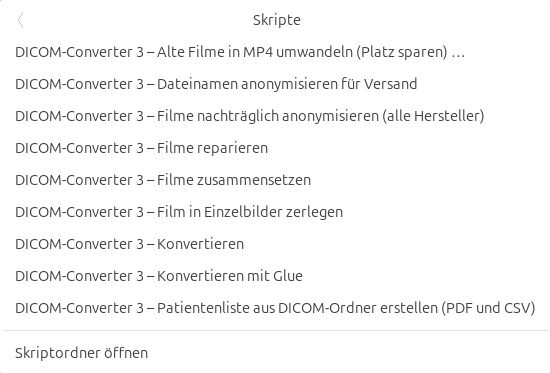
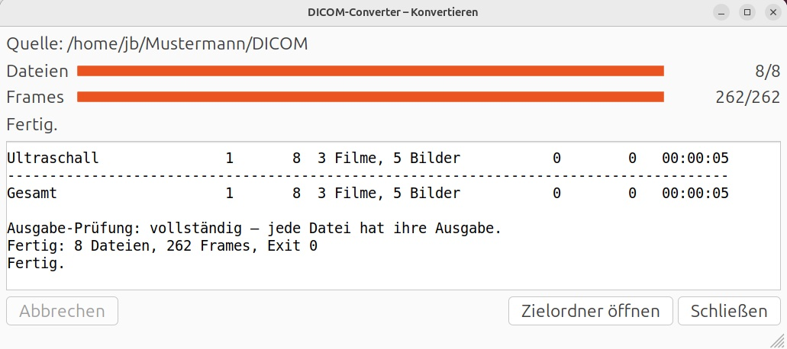
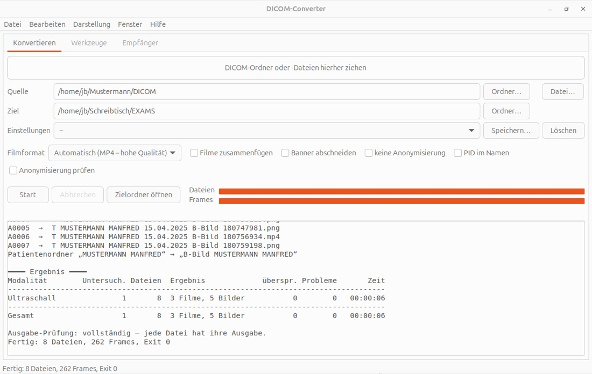

DICOM-Converter
Version 3.0.0.268 · Stand 31.10.2026 · für macOS, Windows und Linux
Der DICOM-Converter macht aus Ultraschall-Untersuchungen – und auch aus CT, MRT, Röntgen und anderen DICOM-Daten – ganz normale Filme und Bilder, die man mit jedem Programm ansehen, in PowerPoint oder Keynote einbauen oder weitergeben kann – und er entfernt dabei beim Ultraschall Name, Patienten-ID und Geburtsdatum aus dem Bild.
Herunterladen
Mac ab macOS 11 (Apple Silicon und Intel), von Apple signiert · Windows 10 oder 11 (64 Bit) · Linux (x64; für ARM-Rechner: AppImage für ARM) · Systemvoraussetzungen
Version 3.0.0.268 · Was ist neu gegenüber 2.0.8 (PDF)
Neu in den letzten Versionen
Version 3.0.0.268 · 31.10.2026
- Filmformat DICOM: In Ordner- und Dateinamen stehen keine Namen und Daten zur Person mehr. Jeder Patient bekommt eine zufällige Kennung, damit ein PACS die Patienten auseinanderhalten kann. Der DICOM-Kopf wird nach der vollständigen Tabelle der Norm bereinigt, PDF-Befunde werden nicht mitgegeben. Datum, Alter, Gerät und Beschreibungen bleiben erhalten – das Format ist für Kollegen, Lehre und PACS gedacht, nicht für Studien.
- „Abbrechen“ wirkt jetzt auch im Filmformat DICOM und beim Einlesen von Schnittbildern, nach der gerade bearbeiteten Datei.
Version 3.0.0.263 · 30.10.2026
- Neu: Filmformat „DICOM – anonymisiert, verlustfrei“ – alle Bilder bleiben DICOM, persönliche Angaben verschwinden aus dem DICOM-Kopf, beim Ultraschall werden sie auch im Bild abgedeckt (ohne neue Kompression). Gedacht für die Weitergabe an andere Kliniken, PACS oder Studien.
- GE LOGIQ E9 (Bildgröße 1442x802): Name, Geburtsdatum und ID werden abgedeckt statt den Kopf abzuschneiden – Datum, Uhrzeit, Sonde und MI bleiben sichtbar.
Version 3.0.0.254 · 30.10.2026
- Der DICOM-Empfänger startet nicht mehr ungefragt bei jeder Anmeldung. Die Installation fragt einmal danach – nötig ist er nur, wenn Ultraschallgeräte direkt an diesen Rechner senden. Ein früher eingerichteter Autostart bleibt, bis man ihn bei dieser Frage abwählt.
- „Alte Keynotes reparieren“: Das Protokoll nennt zu jedem Film und Bild die Folie und ist kürzer; ein beschädigtes Bild bricht die Reparatur einer Präsentation nicht mehr ab.
- Übersichtlichere Filmformate im Programmfenster: „MP4 – hohe / mittlere / geringe Qualität“ und „MOV – MJPEG wie Version 2“. Nahezu verlustfreies MOV, AVI und WMV gibt es nur noch im Terminal (
--preset).
Ältere Versionen
Version 3.0.0.248 · 29.10.2026
- Linux: Die Ergebnisse landen wie auf Mac und Windows im Ordner „EXAMS“ auf dem Schreibtisch (deutsch „Schreibtisch“), auch über das Rechtsklick-Menü.
- „Alte Keynotes reparieren“: übersichtliches Protokoll – welche Präsentation, welcher Film (z. B. „Film 3/24“) und was damit geschehen ist; keine technischen Meldungen mehr.
- „Alte Keynotes reparieren“: Reparierte Präsentationen heißen immer „… (repariert)“ und werden bei einem neuen Durchgang übersprungen – ein abgebrochener Durchgang lässt sich einfach neu starten.
- Behoben: Bei Philips-Filmen, deren alte Abdeckung ersetzt wird, wurde das PHILIPS-Logo mit abgedeckt.
- Linux: Das Rechtsklick-Menü enthält nur noch dieselben Einträge wie auf Mac und Windows.
- Behoben (Linux): Die Einträge im Rechtsklick-Menü zeigten statt des Fortschrittsfensters nur eine Fehlermeldung, und das Fortschrittsfenster blieb nach dem Ende auf „Läuft …“ stehen.
- Film beschleunigen, Beschneiden, In MP4 umwandeln und das Aufräumen leerer bzw. „zum Löschen“-Ordner gibt es nur noch im Terminal (
dicomconverter), nicht mehr im Programmfenster – die Auswahl ist übersichtlicher. - Behoben: „Abbrechen“ im Fortschrittsfenster beendete auf Mac und Linux hängende Vorgänge nicht.
- Behoben: Große Fotos (z. B. 4K-Aufnahmen eines Bildschirms) in Präsentationen oder Ordnern hielten die Erkennung des Ultraschallgeräts stundenlang auf.
Version 3.0.0.235 · 28.10.2026
- Neu: DICOM-Converter für Linux (AppImage für x64- und ARM-Rechner) – mit Programmfenster, Befehl
dicomconverterund Eintrag im Anwendungsmenü. - Neu: „Was ist neu?“ im Menü Hilfe – die Änderungen jeder Version in Kürze. Nach einem Update erscheint die Übersicht einmal von selbst.
- Die Webseite zeigt die letzten Neuerungen gleich oben.
- Patientenordner beginnen mit der Art ihrer Ultraschall-Untersuchungen: „CEUS“, sonst „B-Bild“, sonst „Punktion“.
- CT, MRT, Röntgen und andere: Im Untersuchungsordner steht die untersuchende Einrichtung, z. B. „MR 12.12.2025 Praxis Beispiel“.
- Behoben: Einzelne CT- und MRT-Serien mit nicht quadratischen Bildpunkten wurden als MP4 nicht umgewandelt.
Version 3.0.0.223 · 27.10.2026
- Filme werden jetzt überall als MP4 in hoher Qualität gespeichert: etwa halb so groß wie bisher und auf jedem Gerät abspielbar. Das alte Format von Version 2 gibt es weiter unter Filmformat „mjpeg (mov)“.
- Neu (nur Mac): „Alte Keynotes reparieren …“ – Präsentationen mit alten Filmen werden kleiner und laufen wieder überall; ein Bericht nennt die Foliennummern.
- Neu: „Alte Filme in MP4 umwandeln (Platz sparen) …“ für ganze Ordner – nennt vorher Ersparnis und Dauer.
- „Filme reparieren“ setzt alte QuickTime-Filme aus mehreren Teilen richtig zusammen – jetzt auch unter Windows.
- In MP4-Filmen lässt sich flüssig vor- und zurückspulen.
- Anonymisierung im Bild noch genauer, die Abdeckungen so knapp wie möglich.
- Die Werkzeuge lassen Keynote-Präsentationen, die Fotos-Mediathek und andere Pakete in Ruhe.
Version 3.0.0.169 · 25.10.2026
- Kleine Verbesserungen im Hintergrund.
Version 3.0.0.165 · 24.10.2026
- Am Ende jedes Laufs eine Ergebnistabelle mit der benötigten Zeit je Bildart und insgesamt.
- Das Protokoll ist übersichtlicher und nach Bildarten (Ultraschall, CT, MRT …) geordnet.
- In DICOM verpackte PDF-Befunde werden ausgelesen und einsortiert. Zugangsblätter von Bildportalen (mit Zugangscode oder PIN) werden nie übernommen.
Version 3.0.0.158 · 24.10.2026
- Das Programmfenster öffnet groß und mittig.
- Die Texterkennung liefert auf allen Rechnern dasselbe Ergebnis.
- Bei neuen Geräten nennt das Programm die Kontaktadresse dicom-converter@gmx.net.
Version 3.0.0.150 · 23.10.2026
- Neue, einheitliche Ordner: ein Ordner je Patient („NAME VORNAME ALTER“), darin der Ultraschall als „US <Datum> CEUS“, „… Punktion“ oder „… B-Bild“ sowie CT, MRT und Befunde.
- Verschiedene Patienten mit gleichem Namen bekommen getrennte Ordner.
Version 3.0.0.143 · 23.10.2026
- Einstellungen im Programmfenster unter einem Namen speichern und wieder abrufen; beim Start ist der letzte Stand vorbelegt.
- CT und MRT: verständliche Dateinamen mit Schnittebene, ohne zufällige Kürzel.
- Die vollständige Serienbeschreibung steht im Dateinamen.
- Handbuch und Kurzanleitung als PDF besser lesbar.
Version 3.0.0.126 · 21.10.2026
- Neu: „Patientenliste aus DICOM-Ordner erstellen (PDF und CSV)“ – wer wann mit welchem Gerät untersucht wurde.
- Neue Geräte: GE LOGIQ E10, LOGIQ E9 und Venue.
Version 3.0.0.121 · 20.10.2026
- Windows: „Im Ordner zeigen“ funktioniert wieder.
- Weniger technische Meldungen im Protokoll.
Version 3.0.0.119 · 20.10.2026
- Windows: Filme standardmäßig als MP4.
- Systemvoraussetzungen in Anleitung und auf der Webseite.
Version 3.0.0.115 · 19.10.2026
- Neue Geräte werden automatisch erkannt und anonymisiert; Proben zum Einschicken liegen als ZIP in EXAMS.
- Viele weitere Hersteller werden erkannt (Esaote, Mindray, BK Medical, Butterfly, Clarius und andere).
- Der Befehl im Terminal heißt jetzt
dicomconverter. - Das Mac-Paket ist von Apple signiert und beglaubigt: keine Warnung mehr beim Öffnen.
Version 3.0.0.96 · 19.10.2026
- Neue Webseite mit Downloads, Impressum und Datenschutz.
Version 3.0.0.86 · 19.10.2026
- Erste Version 3 zum Herunterladen: Installationsprogramm für Mac und Windows, eigenes Programmfenster, Rechtsklick-Menü und Anonymisierung für alle gängigen Hersteller.
Was er macht
Ultraschallgeräte speichern ihre Bilder im Format DICOM. Diese Dateien lassen sich auf einem normalen Computer kaum öffnen, und im Bild stehen die Patientendaten. Der DICOM-Converter
- wandelt jede Filmschleife (Loop) in einen Film und jedes Standbild in ein PNG-Bild um,
- überdeckt Name, ID und Geburtsdatum im Bild – passend für jedes unterstützte Gerät, Logos und Messwerte bleiben sichtbar,
- sortiert die Ergebnisse ordentlich: ein Ordner pro Patient, darin ein Ordner pro Untersuchung.


Installieren
Die Installationsprogramme gibt es oben unter Herunterladen. Weitere Software ist nicht nötig.
Systemvoraussetzungen
| Mac | Windows | Linux | |
|---|---|---|---|
| System | macOS 11 (Big Sur) oder neuer | Windows 10 oder 11, 64 Bit | Distributionen ab etwa 2022 mit grafischer Oberfläche (z. B. Ubuntu 22.04, Debian 12, Fedora 36, Linux Mint 21 und neuer) |
| Rechner | Apple Silicon (M1 und neuer) und Intel – ein Paket für beide | Intel/AMD (x64); Windows auf ARM über die eingebaute x64-Emulation | Intel/AMD (x64) oder ARM (aarch64) – je eine Datei |
| Speicherplatz | ca. 220 MB | ca. 130 MB | ca. 61 MB |
| Installation | Administratorkennwort | Administratorrechte | keine Rechte nötig |
| Signatur | mit Apple-Entwickler-ID signiert und von Apple beglaubigt (notarisiert) – startet ohne Warnung | nicht signiert – Windows warnt beim ersten Start (siehe unten) | nicht signiert |
Weitere Software ist nicht nötig; alles Benötigte steckt im Programm.
Mac (ab macOS 11)
- DICOM-Converter-macOS.pkg doppelklicken. Das Paket ist von Apple signiert und beglaubigt – macOS öffnet es ohne Warnung.
- Dem Installationsprogramm folgen. Eine ältere Version wird entfernt – Ihre bisherigen Untersuchungen bleiben erhalten.
Windows (Windows 10 oder 11, 64 Bit)
- DICOM-Converter-Windows-Setup.exe doppelklicken.
- Warnt Windows („Der Computer wurde durch Windows geschützt“): Weitere Informationen → Trotzdem ausführen, dann die Frage nach Administratorrechten mit Ja beantworten.
- Ist noch ein alter DICOM-Converter da, fragt das Installationsprogramm, ob er entfernt werden soll – Ihre Untersuchungen bleiben erhalten.
Linux (AppImage)
- DICOM-Converter-Linux-x86_64.AppImage (auf ARM-Rechnern …-aarch64.AppImage) an einen festen Ort legen, z. B. in den Persönlichen Ordner unter Programme.
- Ausführbar machen: Rechtsklick → Eigenschaften → Als Programm ausführen (oder im Terminal
chmod +x DICOM-Converter-Linux-*.AppImage). - Doppelklicken. Beim ersten Start fragt der DICOM-Converter, ob er das Rechtsklick-Menü im Dateimanager, den Befehl
dicomconverterund einen Eintrag im Anwendungsmenü einrichten soll.
Das Rechtsklick-Menü gibt es im Dateimanager Nautilus (GNOME, Ubuntu). Startet das AppImage nicht, fehlt auf manchen Systemen FUSE – dann hilft sudo apt install fuse3 bzw. das passende Paket der Distribution.
Am schnellsten: Rechtsklick auf den Ordner
Den Ordner mit den DICOM-Daten (z. B. vom USB-Stick oder von der CD) mit der rechten Maustaste anklicken:
- Windows: DICOM-Converter 3 → Konvertieren. Unter Windows 11 erst auf Weitere Optionen anzeigen klicken.
- Mac: DICOM-Converter 3 – Konvertieren ganz unten im Menü (bei manchen Macs im Untermenü Schnellaktionen).
- Linux: Skripte → DICOM-Converter 3 – Konvertieren (Dateimanager „Dateien“).



Ein kleines Fenster zeigt, wie weit die Umwandlung ist, und listet am Ende jede Datei mit ihrem Ergebnis auf. Mit Zielordner öffnen sehen Sie die fertigen Filme.



Mit dem Programmfenster
„DICOM-Converter“ im Startmenü (Windows), im Ordner Programme (Mac) bzw. im Anwendungsmenü (Linux) öffnen. Dann:
- Quelle: den DICOM-Ordner in das Fenster ziehen – oder auf Ordner… klicken.
- Start klicken. Die Balken zeigen den Fortschritt, darunter steht das Protokoll.
- Zielordner öffnen zeigt die Ergebnisse.
Alles andere kann normalerweise so bleiben. Die fertigen Dateien landen im Ordner EXAMS auf dem Schreibtisch.



Die Schalter in einfachen Worten
| Filmformat | „Automatisch“ liefert MP4 in hoher Qualität – etwa halb so groß wie früher, spielt überall. Für E-Mail gibt es kleinere MP4-Varianten. |
| Filme zusammenfügen | Alle Loops einer Untersuchung werden ein einziger Film. |
| Banner abschneiden | Die Kopfzeile mit den Gerätedaten wird ganz abgeschnitten statt überdeckt. |
| PID im Namen | Die Patienten-ID steht zusätzlich im Ordnernamen. |
| Anonymisierung prüfen | Liest die fertigen Bilder noch einmal per Texterkennung und warnt, falls doch Patientendaten zu sehen sind (dauert länger). |
| keine Anonymisierung | ⚠ Patientendaten bleiben im Bild – nur für interne Zwecke. |
So sieht das Ergebnis aus
EXAMS
└── B-Bild MUSTERMANN MANFRED
└── US 15.04.2025 B-Bild
├── T MUSTERMANN MANFRED 15.04.2025 B-Bild 180703175.png ← Standbild
├── T MUSTERMANN MANFRED 15.04.2025 B-Bild 180708910.mp4 ← Film
└── …
Der Dateiname nennt Gerätehersteller (hier T = Toshiba/Canon), Name, Alter (wenn das Geburtsdatum bekannt ist – beim Testpatienten fehlt es), Datum, Art der Untersuchung und Uhrzeit der Aufnahme. Alle Untersuchungen eines Patienten liegen in einem Ordner „NAME VORNAME ALTER“; Ultraschall-Ordner heißen nach der Art: CEUS, Punktion oder B-Bild, und der Patientenordner beginnt mit der Art seiner Ultraschall-Untersuchungen (CEUS vor B-Bild vor Punktion). Der Name steht nur im Dateinamen, nicht im Bild. Sortiert nach Datum erscheinen die Dateien in der Reihenfolge der Untersuchung.

Auch CT, MRT, Röntgen und andere DICOM-Daten
Neben Ultraschall wandelt der DICOM-Converter auch die übrigen gängigen DICOM-Daten um – zum Beispiel die CD einer CT- oder MRT-Untersuchung. Bedienung, Ordner und Dateinamen sind dieselben wie beim Ultraschall; im Ordnernamen steht zusätzlich die untersuchende Einrichtung, wenn die Daten sie nennen.
| Daten | Ergebnis |
|---|---|
| CT, MRT, PET, Angiographie | Jede Serie wird ein Film, in dem man durch die Schichten blättert. Übersichtsaufnahmen (Topogramm, Localizer) werden weggelassen. |
| Durchleuchtung | Jede Serie wird ein Film. |
| Röntgen, Mammographie, Fotos, Endoskopie | Jedes Bild wird ein PNG-Bild, Videos werden Filme. |
CT- und MRT-Filme bekommen sprechende Namen aus den Angaben in den DICOM-Dateien: Schnittebene, Kontrastmittel-Phase (nativ, arteriell, portalvenös, venös, Spätphase; bei der Leber-MRT mit Primovist bis zur hepatobiliären Phase) und bei der MRT In-Phase und Opposed-Phase.
EXAMS
└── MUSTERMANN MANFRED
├── CT 16.04.2025 Radiologie Musterstadt
│ ├── CT MUSTERMANN MANFRED 16.04.2025 Abdomen axial portalvenoes 0,6 mm Weichteil.mp4
│ └── CT MUSTERMANN MANFRED 16.04.2025 Thorax koronal KM 1 mm arteriell.mp4
└── MR 17.04.2025 Radiologie Musterstadt
├── MR MUSTERMANN MANFRED 17.04.2025 093312 T1 VIBE Dixon tra Opposed-Phase nativ.mp4
├── MR MUSTERMANN MANFRED 17.04.2025 094020 T1 VIBE Dixon tra arteriell.mp4
└── MR MUSTERMANN MANFRED 17.04.2025 095136 T1 VIBE Dixon tra 15 min hepatobiliaer.mp4
Im Bild wird bei diesen Daten nichts überdeckt – CT-, MRT- und Röntgenbilder zeigen den Namen normalerweise nicht im Bild (siehe Datenschutz).
Was er noch kann
| Funktion | Wozu |
|---|---|
| Konvertieren mit Glue | Wie Konvertieren, aber alle Loops einer Untersuchung als ein Film. |
| Filme zusammensetzen | Alle Filme eines Ordners zu einem Film verbinden. |
| Film in Einzelbilder zerlegen | Jedes Bild eines Films als PNG speichern, z. B. für Abbildungen. |
| Filme reparieren | Filme, die auf heutigen Rechnern nicht mehr spielen (alte QuickTime-Filme, AVI, alte Formate) oder beschädigt sind, wieder abspielbar machen. |
| Dateinamen anonymisieren für Versand | Entfernt Namen aus den Dateinamen, auf Wunsch gleich als ZIP zum Verschicken. |
| Patientenliste aus DICOM-Ordner erstellen | Liste aller Untersuchungen eines Ordners (Patient, Datum, Gerät, Untersucher, Anforderer, Fragestellung) als PDF und als Tabelle für Excel. |
| Filme nachträglich anonymisieren | Für Filme und Bilder, die direkt vom Gerät als AVI/MP4 exportiert wurden: Hersteller und Patientendaten werden am Bild erkannt und überdeckt. |
| Alte Keynotes reparieren | Nur Mac: Präsentationen mit alten Filmen reparieren – Filme halb so groß und überall abspielbar, Philips-Filme anonymisiert, Keynote-'09 ins neue Format; mit Bericht. |
| In Keynote einfügen | Nur Mac: Filme direkt in eine Keynote-Präsentation. |
| In PowerPoint einfügen | Mac und Windows: Bilder und Filme direkt in eine PowerPoint-Präsentation – auch einen ganzen Ordner. |
| Empfänger | Das Ultraschallgerät schickt Untersuchungen direkt per Netzwerk an den Rechner; sie werden automatisch umgewandelt. |
Alle diese Funktionen gibt es im Rechtsklick-Menü bzw. im Programmfenster auf den Reitern Werkzeuge und Empfänger.


Datenschutz – bitte beachten
- Meldet das Programm „generisch anonymisiert – bitte prüfen“ oder „Mögliche unzureichende Anonymisierung“, die genannten Dateien vor der Weitergabe ansehen.
- Von Hand ins Bild getippte Bemerkungen kann das Programm nicht erkennen.
- Bei CT, MRT, Röntgen und anderen Nicht-Ultraschall-Daten wird im Bild nichts überdeckt. Eingescannte Dokumente, Bildschirmfotos oder Beschriftungen im Bild (manchmal bei Angiographie und Durchleuchtung) können den Namen zeigen – vor der Weitergabe ansehen.
- Der Ordner EXAMS/unsupp_res enthält Beispieldateien unbekannter Geräte als unveränderte Originale mit allen Patientendaten – diesen Ordner nicht weitergeben.
- Zum Einschicken legt das Programm bei neuen Geräten automatisch EXAMS/DICOM-Converter-Proben-<Datum>.zip an. Darin sind Name, Patienten-ID, Geburtsdatum und Arztnamen aus den Dateien entfernt – diese ZIP-Datei bitte an Dr. Jens Berger schicken (dicom-converter@gmx.net). Die Bilder selbst sind unverändert und können noch Namen zeigen; daher nur auf sicherem Weg verschicken.
- Der Patientenname steht im Dateinamen. Vor dem Verschicken „Dateinamen anonymisieren für Versand“ benutzen.
Hilfe
Im Programm unter Hilfe → Kurzanleitung bzw. Hilfe → Handbuch steht alles ausführlich (unter Windows auch im Startmenü unter „DICOM-Converter“).
Kontakt: Fragen, Fehlermeldungen und Wünsche bitte per E-Mail an dicom-converter@gmx.net – bitte ohne Patientendaten.
| Problem | Lösung |
|---|---|
| Windows: SmartScreen blockiert | Weitere Informationen → Trotzdem ausführen |
| Eine Datei ist „nicht unterstützt“ | Das Gerät ist noch nicht eingerichtet – bitte melden (dicom-converter@gmx.net). |
| Im Bild ist noch ein Name zu sehen | Datei nicht weitergeben und melden. |
Unterstützen
Der DICOM-Converter ist kostenlos. Für die Weiterentwicklung fallen jedoch laufende Kosten an, vor allem die Jahresgebühr für das Apple-Entwicklerprogramm (Signatur und Prüfung durch Apple, damit der Mac das Programm ohne Warnung startet) und das Abonnement für den KI-Assistenten Claude, mit dem das Programm entwickelt wird. Wer die Weiterentwicklung unterstützen möchte, kann das gern über PayPal tun – vielen Dank!
Diese Seite zählt Aufrufe und Downloads anonym (GoatCounter und ein eigener Zähler bei Cloudflare, ohne Cookies, ohne Speicherung von IP-Adressen).
Alle Bilder auf dieser Seite zeigen Testpatienten („Mustermann“), keine echten Patientendaten.
DICOM-Converter 3.0.0.268 · Copyright Dr. Jens Berger (2012-2026)